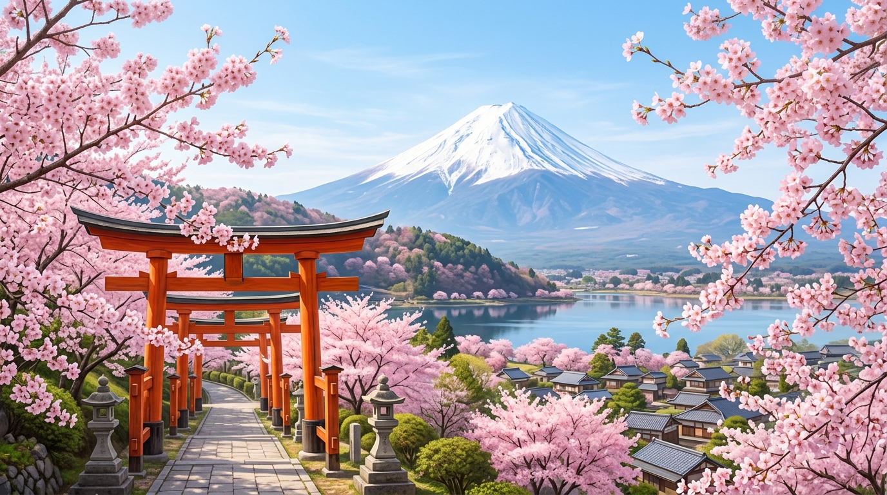
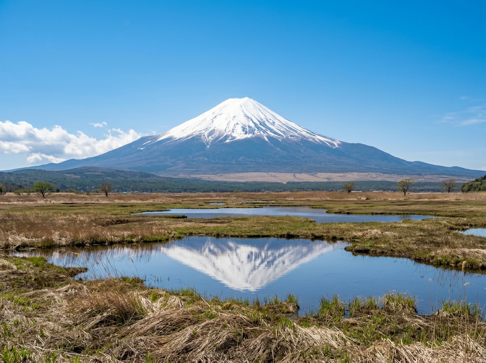
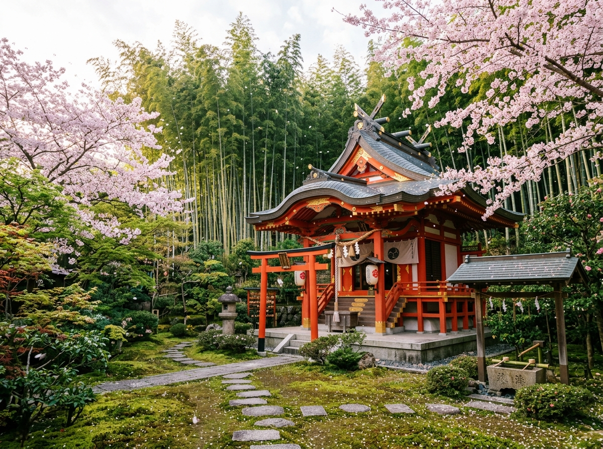
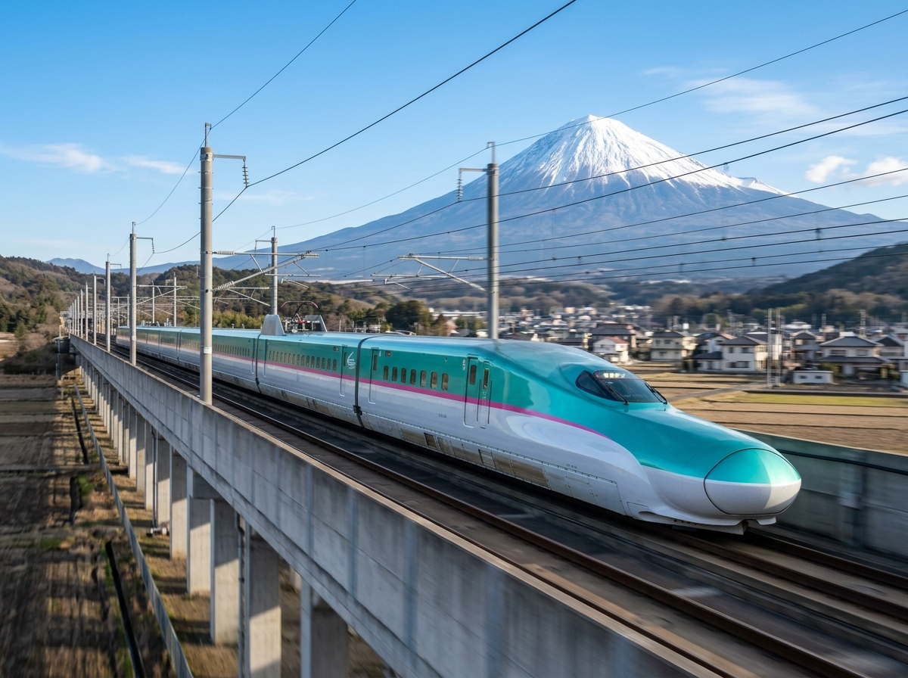
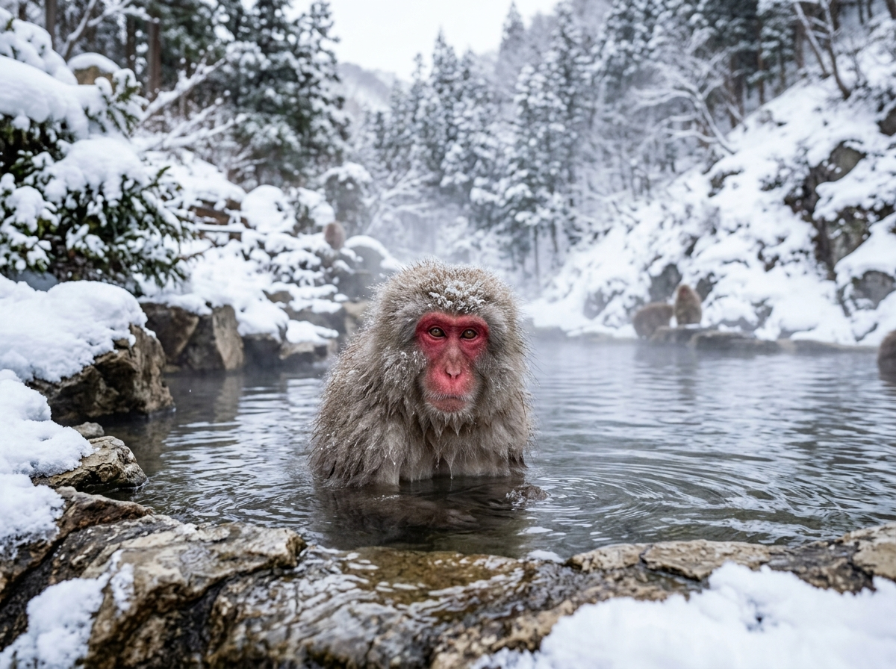
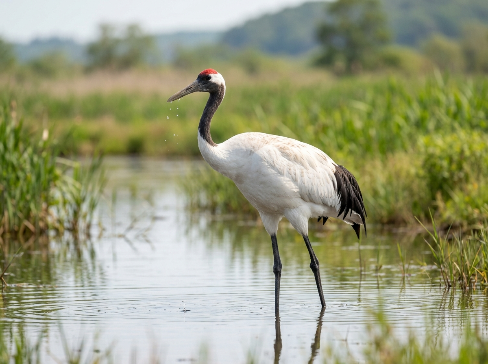
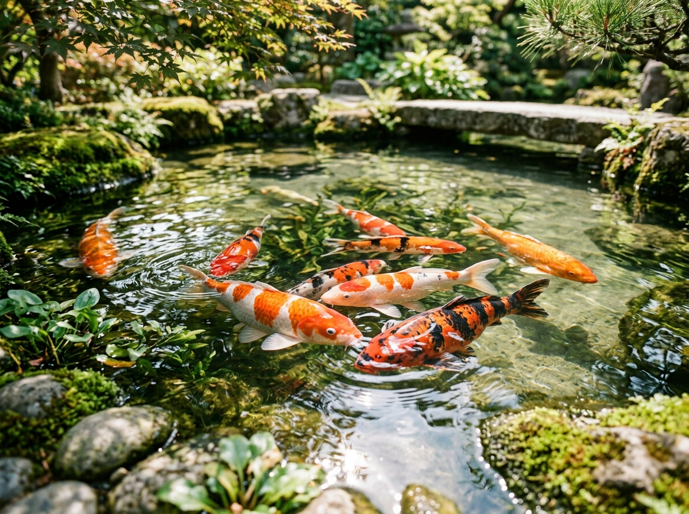
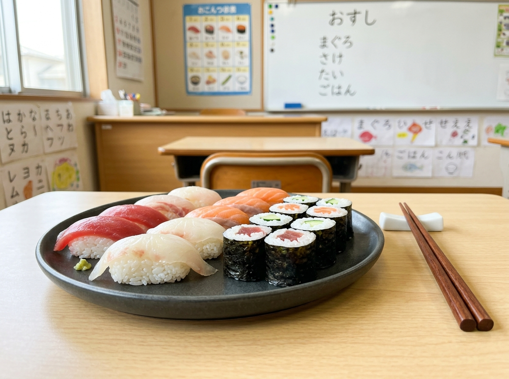
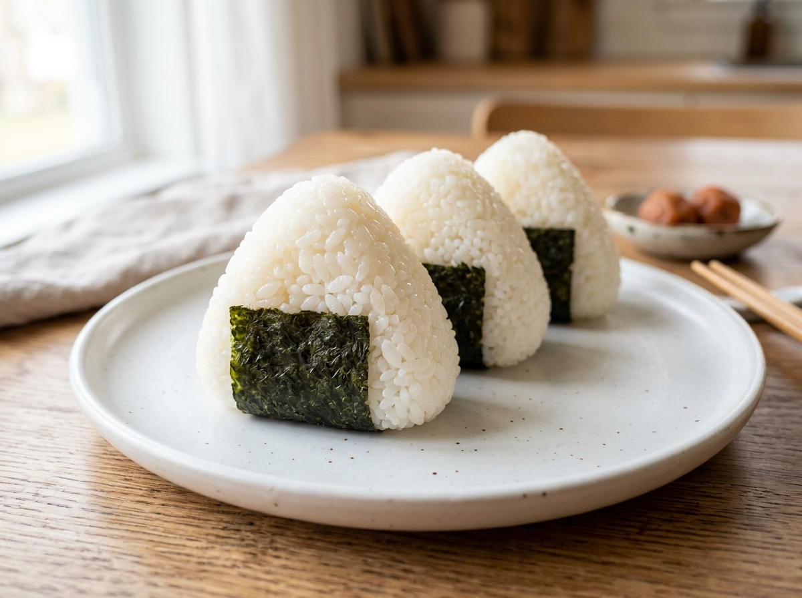
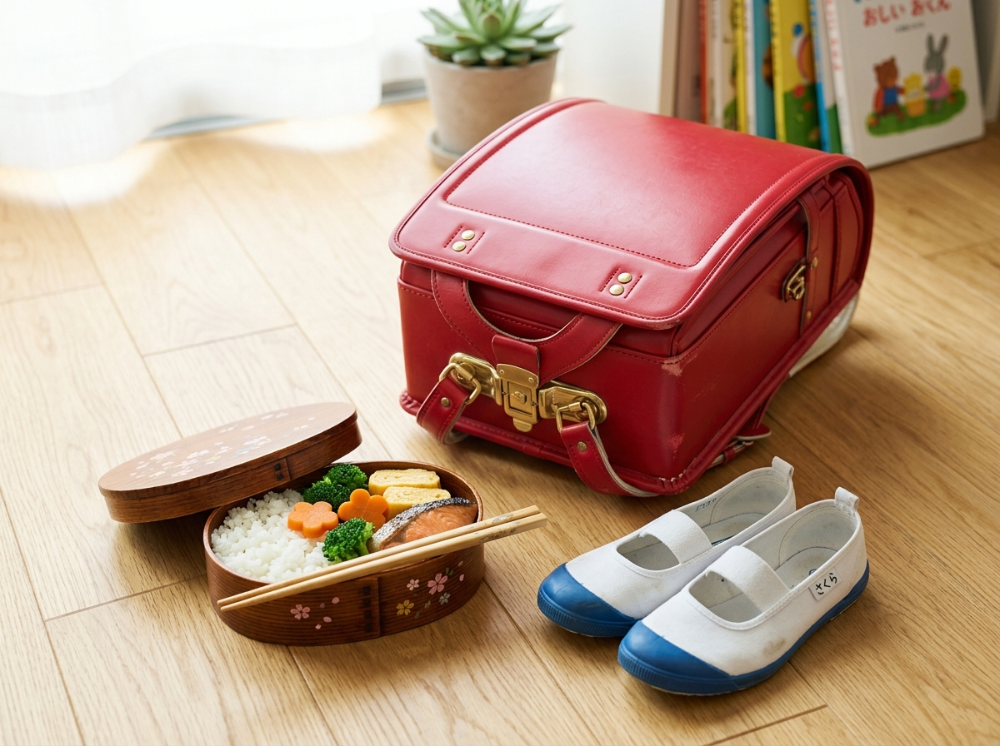

Hier stehen die wichtigsten Daten zu deinem Land. In der App baust du daraus deinen eigenen Steckbrief.
| Hauptstadt | Tokio |
| Kontinent | Asien |
| Sprache | Japanisch |
| Währung | Yen |
| Einwohner | etwa 123 Millionen Menschen |
| Fläche | etwa 380.000 km², etwas größer als Deutschland, aus über 6.800 Inseln |
| Großer Berg | der Fuji, mit 3.776 m der höchste Berg Japans, ein schlafender Vulkan |
| Nachbarländer | Inselstaat ohne Landgrenzen; am nächsten über das Meer China, Südkorea und Russland |
In Japan gibt es viele berühmte Orte. Diese vier solltest du kennen.

Berg FujiDer Fuji ist der höchste und berühmteste Berg in Japan. Er ist ein Vulkan und hat eine fast runde Spitze, die im Winter mit Schnee bedeckt ist. Für viele Menschen in Japan ist er ein heiliger Berg. Bei klarem Wetter sieht man ihn sogar von der Hauptstadt Tokio aus.
Grüne Wörter für die AppVulkanhöchster Bergheiliger BergSchneeSpitze
Tempel in KyotoDie Stadt Kyoto war früher die Stadt des Kaisers. Dort gibt es Hunderte alte Tempel und Schreine. Viele liegen mitten in ruhigen Gärten oder in einem Bambuswald. Im Frühling blühen rundherum die rosa Kirschblüten.
Grüne Wörter für die Appalte TempelSchreineKyotoBambuswaldKirschblüten

TokioTokio ist die Hauptstadt und eine der größten Städte der Welt. Hier stehen hohe Wolkenkratzer neben stillen Tempeln. Es gibt riesige Einkaufszentren und bunte Stadtviertel mit vielen Lichtern. Tag und Nacht sind hier sehr viele Menschen unterwegs.
Grüne Wörter für die AppHauptstadtWolkenkratzerriesige StadtLichterviele Menschen
ShinkansenDer Shinkansen ist ein superschneller Zug. Er fährt bis zu 320 Kilometer pro Stunde und verbindet die großen Städte. Vorne hat er eine lange, spitze Nase wie ein Vogelschnabel. Berühmt ist er dafür, dass er fast immer ganz pünktlich ist.
Grüne Wörter für die Appschneller Zug320 km/hspitze Nasepünktlichverbindet Städte

In Japan leben Tiere, die du bei uns nicht in der Natur findest.

SchneeaffeDer Schneeaffe heißt auch Japan-Makak. Er hat ein rotes Gesicht und ein dichtes, warmes Fell. Im Winter setzt er sich gern in heiße Quellen, um sich aufzuwärmen. Dann sitzt er bis zum Hals im dampfenden Wasser.
Grüne Wörter für die Approtes Gesichtdichtes Fellheiße QuelleWinterAffe
KranichDer Kranich ist ein großer, weißer Vogel mit langen Beinen und einem roten Fleck auf dem Kopf. In Japan gilt er als Glücksbringer. Man faltet ihn auch oft aus Papier, das nennt man Origami.
Grüne Wörter für die Appgroßer Vogelweißlange BeineGlücksbringerOrigami


KoiDer Koi ist ein bunter Fisch. Es gibt ihn in Orange, Weiß, Rot und Schwarz. In Japan werden Kois seit vielen Hundert Jahren gezüchtet. Sie schwimmen ruhig in Teichen bei Tempeln und in schönen Gärten.
Grüne Wörter für die Appbunter FischTeichgezüchtetim Gartenruhig
In der App kannst du beim Essen das Foto nehmen oder dein Gericht selbst malen.
SushiSushi ist ein bekanntes Essen aus Japan. Es besteht aus kaltem Reis mit frischem Fisch oder Meeresfrüchten. Oft wird das Ganze mit einem Streifen Nori-Alge zusammengerollt. Man isst Sushi gern mit Stäbchen.
Grüne Wörter für die AppReisroher FischNori-AlgegerolltStäbchen

RamenRamen ist eine heiße Nudelsuppe. In der Brühe schwimmen lange Nudeln, dazu kommen Gemüse, ein Ei und oft auch Fleisch. Es gibt die Suppe in vielen Geschmacksrichtungen. Sie macht warm und satt.
Grüne Wörter für die AppNudelsuppeheiße BrüheEiGemüsemacht satt
OnigiriOnigiri ist ein Reisball, der meistens dreieckig geformt ist. In der Mitte steckt oft eine kleine Füllung. Außen ist er mit einem Streifen Nori-Alge umwickelt. Viele Kinder nehmen ihn als Snack mit in die Schule.
Grüne Wörter für die AppReisballdreieckigFüllungNori-AlgeSnack

⚽ Gut zu wissen
Die Fußball-Nationalmannschaft von Japan hat den Spitznamen Samurai Blue und spielt in blau-weißen Trikots. Japan ist eine starke Mannschaft aus Asien und war schon viele Male bei der WM dabei. Für die WM 2026 hat sich Japan sogar als allererstes Land der Welt qualifiziert. Bekannt ist das Team für sein schnelles, faires Spiel und seine begeisterten Fans.
Grüne Wörter für die AppSamurai Blueblaues Trikotstark in Asienbei der WM 2026Takefusa Kubo
🌟 Profi-Wissen
Japan hat bei der WM 2022 für große Überraschungen gesorgt. Das Team besiegte Spanien und Deutschland, beide Weltmeister. Takefusa Kubo ist Japans bekanntester junger Spieler. Er spielt in Spanien beim FC Real Sociedad.
Grüne Wörter für die AppTakefusa KuboReal SociedadWM 2022 ÜberraschungSpanien und Deutschland besiegtFußball-Japan
Schule in JapanIn Japan ziehen die Kinder in der Schule ihre Straßenschuhe aus und wechseln in Hausschuhe. Es gibt keine Putzfrau. Stattdessen putzen die Kinder ihr Klassenzimmer am Ende des Tages selbst, das nennt man Putzdienst. Auf dem Rücken tragen viele einen festen Schulranzen, der Randoseru heißt.
Grüne Wörter für die AppHausschuheSchuhe wechselnPutzdienstselbst putzenRandoseru
Essen mit StäbchenViele Kinder in Japan essen mit zwei dünnen Stäbchen statt mit Messer und Gabel. Ihr Essen bringen sie oft in einer Bento-Box mit. Darin liegen Reis, Gemüse und kleine Snacks ordentlich nebeneinander. In ihrer Freizeit lesen viele Kinder gern Comics, die Manga heißen.
Grüne Wörter für die AppStäbchenBento-BoxReisordentlichManga
